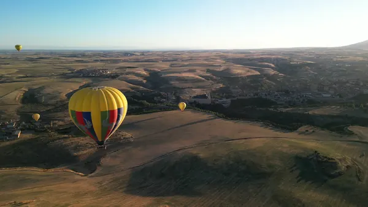

Mert Tureli
Results
- 1st
- Battle of the Rockets 2026, Deployable Sensor Payload. Captain and chief engineer of CHARGER.
- 100%
- Feed indexing reliability on competition day. I owned all of Robo-Catcher's electronics and firmware.
- 13.8ft/s
- CHARGER payload descent rate, against a 15 ft/s limit, on a $716 hardware budget.
- $70K
- Seed funding raised for ModuFly, a rocketry education startup I co-founded.
Things I built
and measured
-

01 / Airframe + payload / Union College Rocket Team, 2026
CHARGER
The competition rocket that won its event at Battle of the Rockets 2026. As captain and chief engineer I led the design and manufacture of the airframe and the deployable sensor payload, and ran the team through design review, build and launch day recovery.
- Result
- First place
- Descent
- 13.8 ft/s vs 15 limit
- Hardware
- $716 total
-

02 / Mechanism + firmware / Senior capstone, 2025
Robo-Catcher
An automatic softball catching and return machine, built by a twelve person team. I co-led the feeding subsystem, then owned all of the electronics and firmware: flywheel drive, stepper feed indexing, interlocks, wireless start and stop, and hardware cutoffs wired independently of the microcontroller.
- Indexing
- 100% on competition day
- Build cost
- Under $700
- Weight
- 55 lb, fits a car trunk
-

03 / Thermal + instrumentation / SunThru, 2026
HOTBOX
A thermal test bench to rank glazing samples by insulating performance. I designed and built the chamber, sensor stack, electronics, firmware and the layered safety system that lets it run unattended overnight. It reads heat flow through the sample directly and only accepts a result after an hour of steady readings.
- Cost
- About a quarter of the quote
- Accepts
- 1 hr steady readings
- Scales
- Full size window chamber
-
04 / Thermal + control electronics / Personal, 2026
Therma-Shift
A solid state coaster that heats or cools any mug or glass, built for a seed competition. Closed loop temperature control with thermal runaway cutoffs that work independently of the loop. I bench tested the bare thermal stack before writing any control code.
- Cold face
- 11 °C at 12 V
- Equilibrium
- About 5 min
- Target
- ±2 °F
-
05 / Mechanism + firmware / Personal, 2026
Rudder pedals
Fighter style rudder and toe brake pedals for flight sims, designed in SolidWorks and printed. Each axis reads a magnet through a Hall sensor, so nothing wears. I wrote the USB HID firmware, so it is plug and play in any simulator.
- Axes
- 3, independent
- Potentiometers
- 0
- Drivers
- None, USB HID
-

06 / Design for manufacture / SunThru, 2026
Bend fixture
Aerogel is too fragile for off the shelf flexural fixtures, so I designed one: twelve interlocking printed parts on one coordinate system, with SolidWorks VBA rebuilds so a dimension change regenerates every affected part. It is in use for flexural characterization.
- Parts
- 12, all FDM printed
- Hardware
- M3 throughout
- Rebuilds
- Automated in VBA
 Interactive / The flight model
Take CHARGER apart
Every component at its true station. Drag it, cut it open, pick a part and read what it does.
Open the
Interactive / The flight model
Take CHARGER apart
Every component at its true station. Drag it, cut it open, pick a part and read what it does.
Open theexplorer
Where I've worked
-
Jun to Sep 2026 Engineering intern SunThru First in-house prototype units, PLC bring-up, a production blower sourced in one week.
SunThru is a Union College spin-out developing silica aerogel inserts that give double pane windows triple pane performance. I built and tested the company's first full in-house prototype units and led validation on thermal performance and optical clarity. I produced toleranced drawings for machine-shop quotes and managed sourcing under tight lead times.
I supported bring-up of a PLC automation system: ladder logic, panel wiring, instrumentation and structured test procedures on live hardware. I also led sourcing for a replacement production blower on a one week deadline, and caught a power spec mismatch against the site's actual supply before anyone ordered.
-
2023 to 2026 Founder and president Union College Rocket Team Started the team, grew the budget by 700%, won first place.
I started the team from nothing and built it to competition standard. I led the twelve person competition team as captain, trained new members through build labs and owned safety compliance for high power launches. I grew the budget by seven hundred percent by writing funding proposals, which paid for the airframe.
The team won first place at Battle of the Rockets 2026 in the Deployable Sensor Payload event and was chartered as an official section of the National Association of Rocketry.
-
2024 to 2026 Co-founder ModuFly Modular rocket kits for STEM education. Raised $70,000.
A startup around a modular interlocking rocket system for STEM education. I raised $70,000 in seed funding, starting with a $10,000 prize at the SparkLabs competition and then $60,000 from private investors. I led R&D and production and ran hands-on rocketry workshops for more than twenty high school students.
-
Summer 2024 Design engineer and materials intern TASECS, Ankara Aerospace thermal management for two national jet programs.
I designed high efficiency HVAC valve components, ran material stress and fatigue analysis supporting two national fighter and jet trainer programs, and selected aerospace grade materials for printed prototypes, including cooling upgrades for high ambient temperature operation.
Toolkit
- SolidWorks, expert
- GD&T to ASME Y14.5
- Tolerance stack-up
- DFM / DFA
- FEA
- CFD
- MATLAB
- C++
- ESP32
- Teensy
- USB HID
- PID control
- PLC ladder logic
- 4-20 mA instrumentation
- Lathe + mill
- FDM + SLA
- Python
- HTML / CSS / JS
B.S. Mechanical Engineering, Union College, 2026 / Turkish native, English professional, German intermediate
I fly ultralights, make short films, shoot photographs and cook the food I grew up with.



- 01 / Piloting
- Licensed ultralight pilot, certified through the Turkish civil aviation authority. The rudder pedals came out of the same interest.
- 02 / Film
- Three short films screened at the Robert College Film Festival in 2022. One, a solo project, was nominated for cinematography, editing and sound design.
- 03 / Photography
- An ongoing thing rather than a project.
- 04 / Cooking
- I cook most days, mostly the food I grew up with in Izmir.
Like what you see?
Let's build yours.
I design and build websites around your work, your business and the things that make them worth exploring. Same approach as my hardware: work out what it has to do, build it properly, then test it.
- 01A conversationTell me what you're building. A rough idea is a good place to start.
- 02A directionI design around your work, so it looks like you and nobody else.
- 03A hand-built siteWritten by hand, no template, fast on a phone.
This page, measured
- First view
- Under 0.5 MB, 3D after
- Frameworks
- 0
- 3D
- Real CAD model, rendered live
- Motion
- Respects reduced motion